Abstract
Method
A set of K impact recordings from the same object is encoded, pooled as an unordered set, and mapped to continuous, renderer-compatible material parameters. Blend supervision regularizes both the prediction and the latent representation.
Training combines a target-weighted regression loss, a soft-label material classification head, a blend regression term, and a latent blend consistency loss that aligns a blend's audio latent with the interpolation of its two base-material latents — teaching a continuous acoustic-to-physical mapping instead of a lookup over discrete classes.
Physical modal analysis
The parameters are renderer-compatible: every object is voxelized and solved with FEM modal analysis, and the estimated parameters drive the same modal synthesizer at re-render time — so the whole loop, from geometry to sound, stays physically grounded. Below: a voxelized mesh and several of its FEM vibration modes (displacement magnitude).
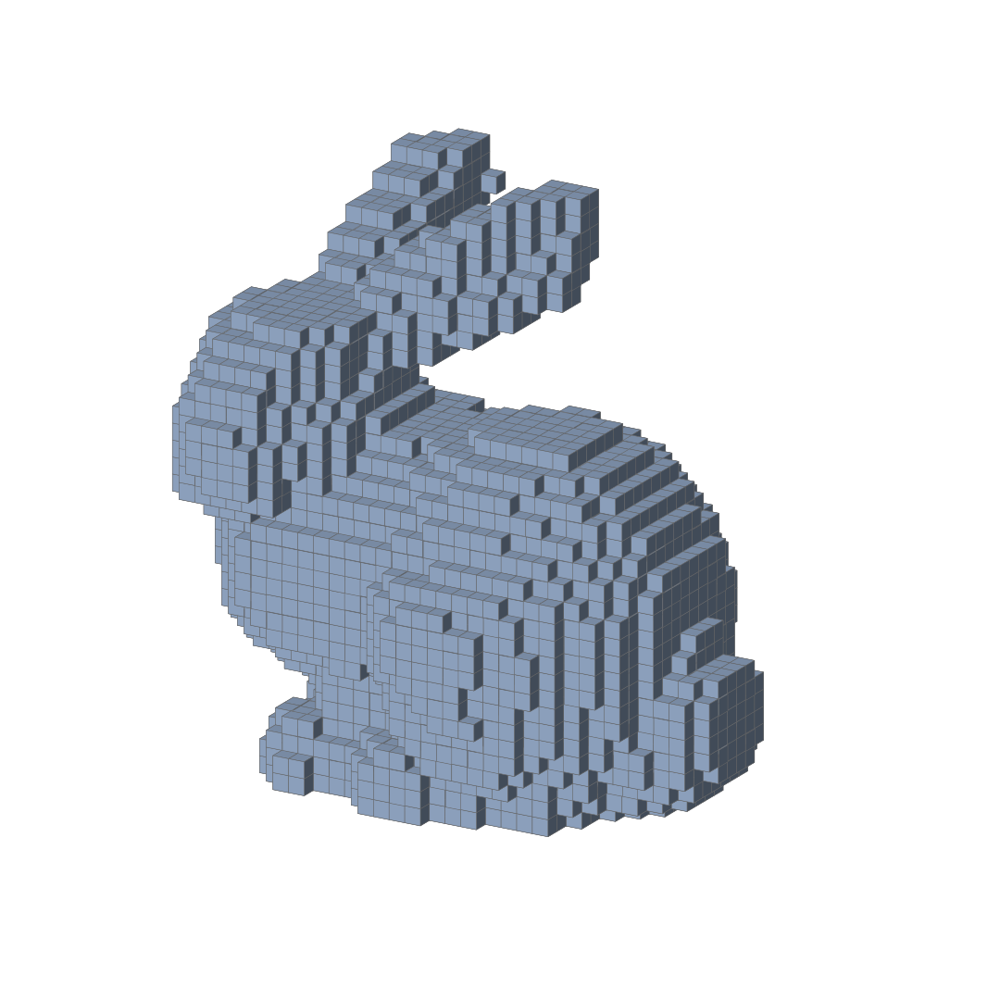
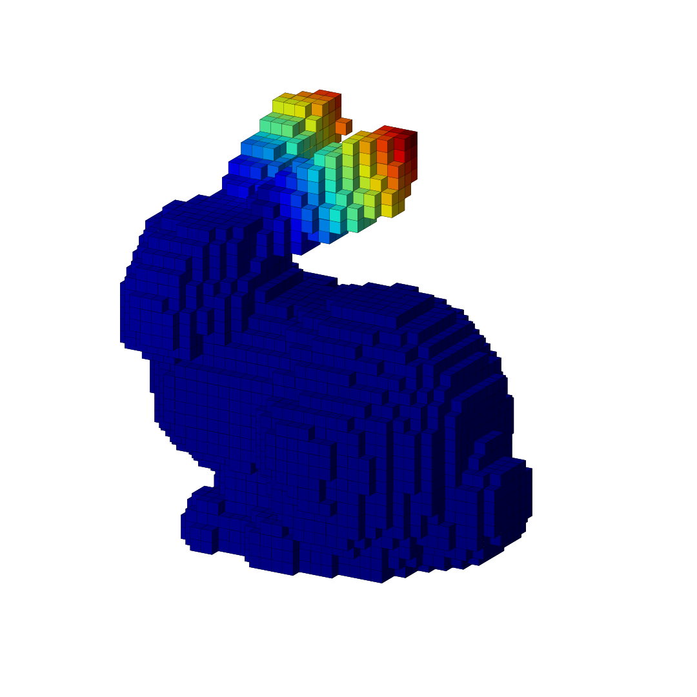
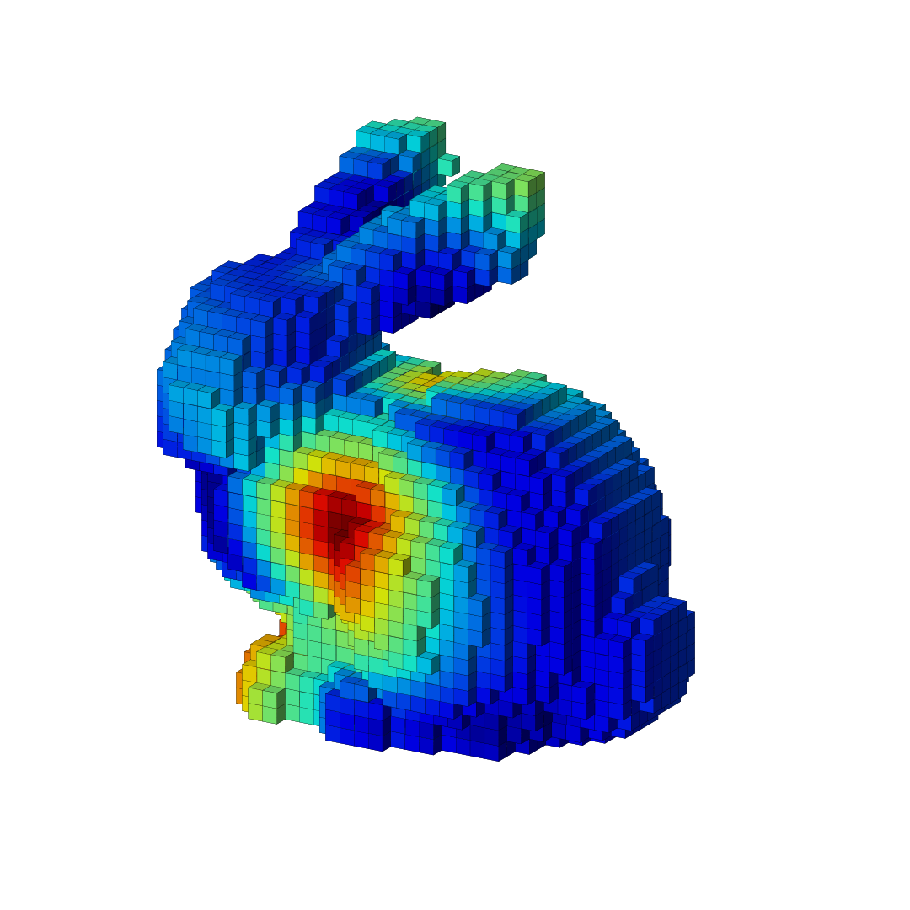
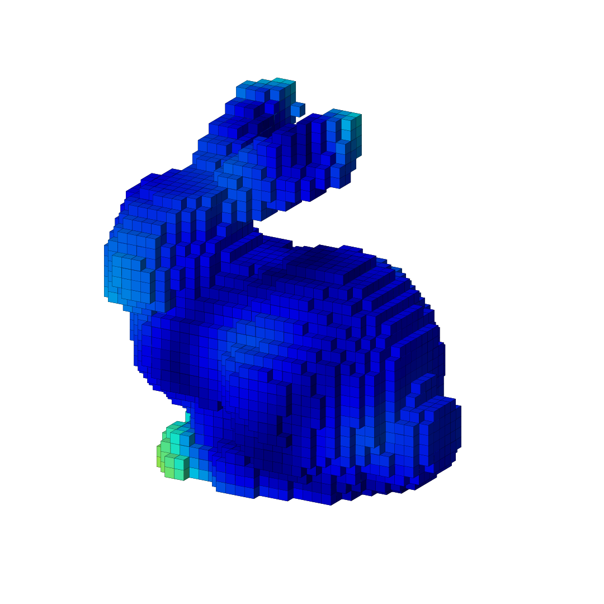
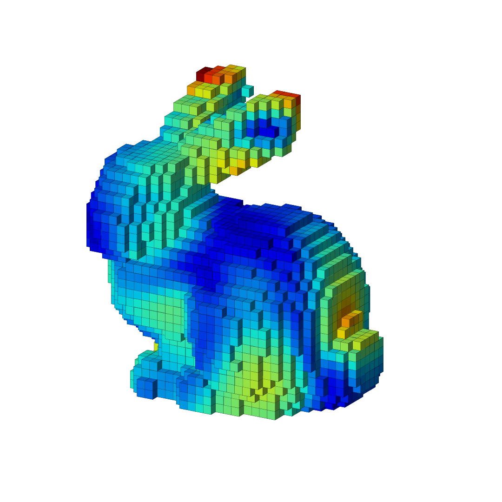
Listen · Synthetic re-rendering
For each object we play the input impact and the sound re-rendered from our predicted parameters (FEM modal synthesis, same object & hit). Close match = accurate parameters.
Bowl · pure
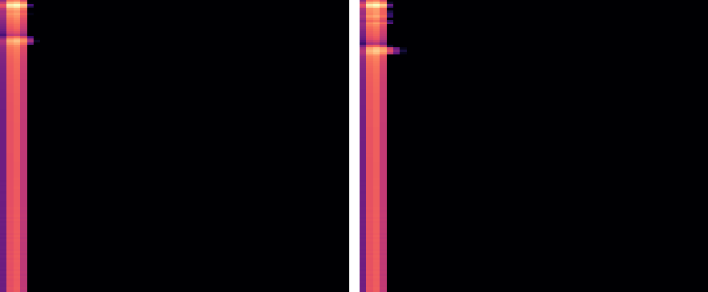
Vessel · pure
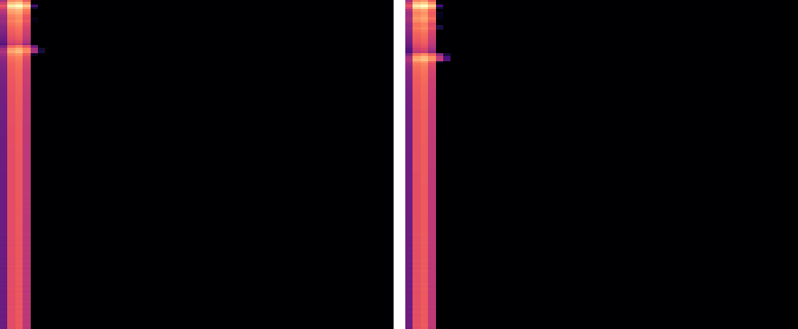
Object · pure
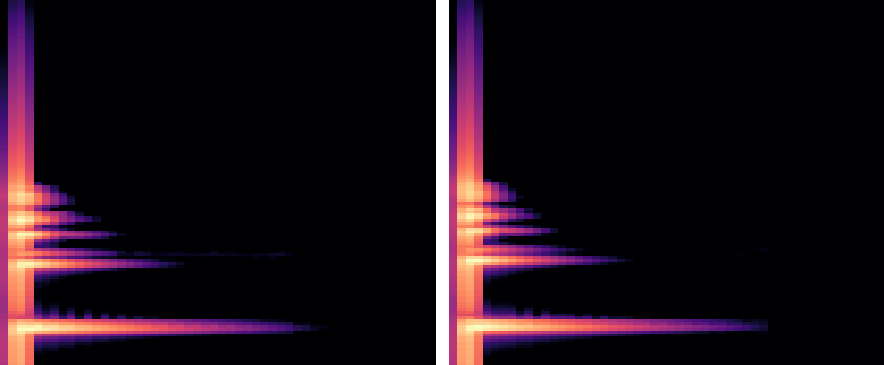
Log-mel spectrograms (onset-aligned): the re-render reproduces the input's modal structure and decay from the predicted parameters alone.
Continuous material blends
Because the targets are continuous, a material can be interpolated. Drag the slider to morph one object from Plastic to Ceramic: the impact sound and the underlying physical parameters move smoothly together (ρ, E, α, β by geometric mean, ν arithmetic) — the continuity our latent blend-consistency objective is built for.
Same object & strike throughout — only the material changes. Each step is a full FEM modal re-solve at the interpolated parameters.
Listen · Real-world objects
Real recordings from ObjectFolder-Real: each panel shows the log-mel of the real recording (left) next to the sound re-rendered from the material parameters our model predicted from that recording (right, playable). Hit point is arbitrary and hit time is estimated (no metadata used).
Vase (green)
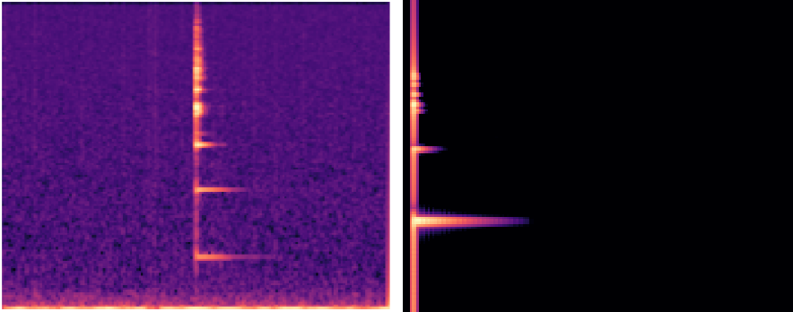
Salad Bowl
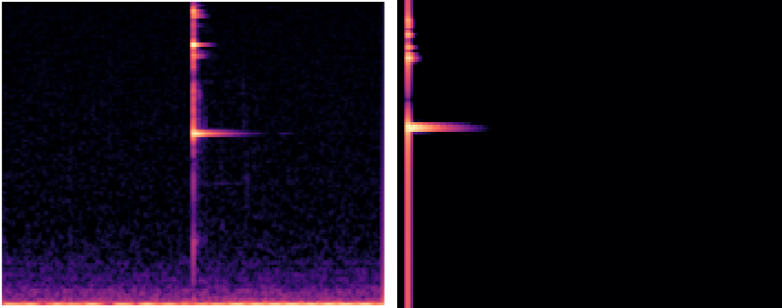
Kettlebell
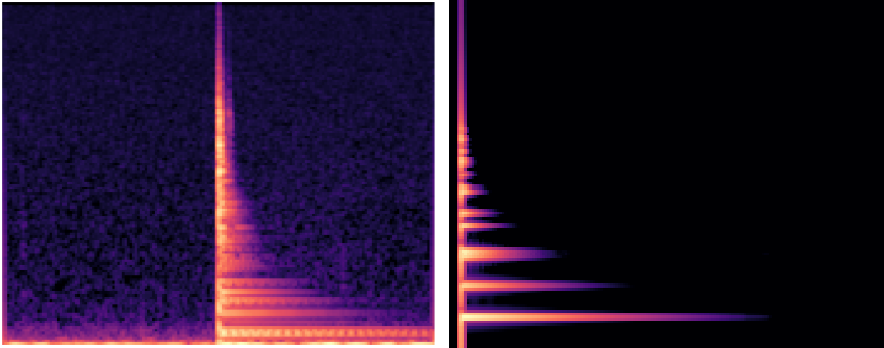
🔁 Drag to rotate the 3D objects · scroll to zoom. Meshes & textures from ObjectFolder-Real.
Results
Physical-parameter estimation error (MAE, lower is better). ρ and E in log-space; ν linear; α, β in physical units; Avg. NMAE is averaged over the normalized targets. Our feed-forward regressor is far below conventional DSP regression, in-context learning with general audio–language models, and per-sound differentiable optimization — while running in 6.1 ms on 1.3 GB (vs. 19 min for optimization).
| Method | Subset | ρ | E | ν | α | β | Avg. NMAE |
|---|---|---|---|---|---|---|---|
| In-context learning (audio–language models) | |||||||
| Qwen2.5-Omni-7B | Single | 0.338 | 0.614 | 0.071 | 13.38 | 1.61×10-1 | 1.270 |
| Qwen2.5-Omni-7B | Blend | 0.257 | 0.495 | 0.067 | 8.23 | 1.73×10-1 | 1.162 |
| Audio Flamingo 3 | Single | 14.1 | 2.14 | 0.130 | 21.7 | 1.8×10-2 | 12.42 |
| Audio Flamingo 3 | Blend | 13.4 | 2.33 | 0.123 | 11.3 | 4.4×10-2 | 10.92 |
| Conventional regression | |||||||
| DSP + reg. | Single | 0.190 | 0.443 | 0.047 | 9.93 | 3.26×10-7 | 1.405 |
| DSP + reg. | Blend | 0.131 | 0.321 | 0.032 | 5.19 | 1.83×10-7 | 0.961 |
| Differentiable optimization | |||||||
| DiffSound | Single | – | 0.893 | 0.890 | – | – | 0.891 |
| DiffSound | Blend | – | 0.487 | 0.696 | – | – | 0.592 |
| Supervised, feed-forward (ours) | |||||||
| Ours | Single | 0.081 | 0.140 | 0.008 | 0.59 | 2.39×10-8 | 0.078 |
| Ours | Blend | 0.119 | 0.206 | 0.012 | 1.08 | 1.32×10-8 | 0.116 |
Averaging more impacts at inference (K = 1 → 8) further reduces error (all-sample NMAE 0.112 → 0.093), as set pooling stably combines multiple observations.
BibTeX
@article{cho2026impactmat,
title = {ImpactMat: Continuous Material Estimation from Impact Sounds for Inverse Sound Rendering},
author = {Cho, Hyebin and Kim, Bumsoo and Chung, Joon Son},
journal = {arXiv preprint},
year = {2026}
}